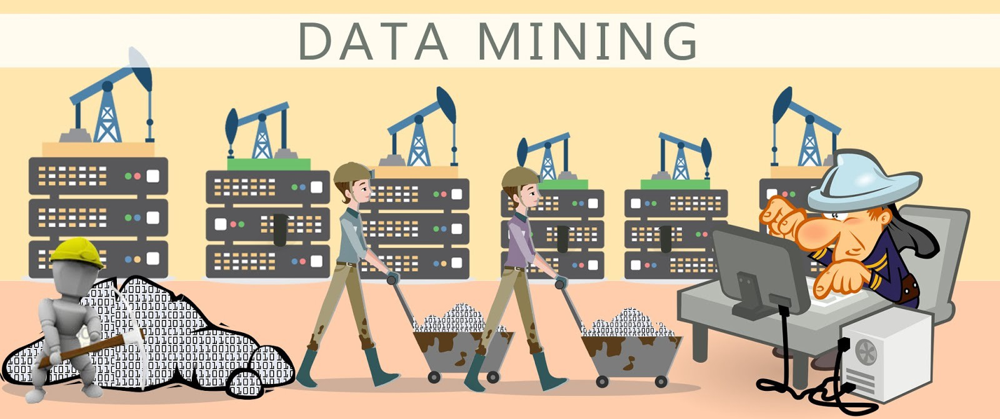

El País - Economía
Introducción al Data Mining
El Data Mining, o minería de datos, es una técnica esencial en el campo del Business Intelligence (BI). Consiste en extraer información valiosa y significativa de grandes conjuntos de datos. En esencia, es como buscar una aguja en un pajar, pero con la ayuda de algoritmos y herramientas específicas.

Clica para más info!
Importancia en Business Intelligence
En el contexto del BI, el Data Mining es fundamental por varias razones:
- Descubrimiento de conocimiento: Permite descubrir patrones y tendencias ocultas en los datos, proporcionando una visión más profunda de las operaciones comerciales.
- Toma de decisiones informada: Al analizar datos relevantes, las empresas pueden tomar decisiones más informadas y estratégicas, lo que lleva a un mejor rendimiento y competitividad.
- Predicción y optimización: Facilita la predicción de tendencias futuras y la optimización de procesos, como la gestión de inventario y la personalización de productos.
Técnicas comunes de Data Mining
Existen varias técnicas de Data Mining, incluyendo:
- Clustering (Agrupamiento): Agrupa datos similares en conjuntos homogéneos para identificar patrones y segmentar clientes.
- Regresión: Analiza la relación entre variables y predice valores numéricos, como las ventas futuras o los precios de mercado.
- Árboles de decisión: Representa visualmente decisiones y resultados posibles en forma de un árbol, facilitando la comprensión de los factores que influyen en una decisión.
- Análisis de asociación: Identifica relaciones entre variables, como la correlación entre productos comprados juntos.
Herramientas de Data Mining
Para llevar a cabo el Data Mining, se utilizan diversas herramientas, entre las que se incluyen:
- R: Un lenguaje de programación popular para análisis estadístico y minería de datos.
- Weka: Una suite de software de código abierto que ofrece una amplia gama de algoritmos de minería de datos y herramientas de visualización.
- RapidMiner: Una plataforma de análisis predictivo con una interfaz gráfica intuitiva para construir modelos de minería de datos.
Consideraciones Éticas
Es crucial abordar las consideraciones éticas en el Data Mining, especialmente en términos de privacidad y seguridad de los datos. Las empresas deben:
- Cumplir con las regulaciones de protección de datos: Asegurarse de que el manejo de datos cumpla con las leyes y normativas vigentes.
- Garantizar la transparencia en el uso de la información: Informar a los usuarios sobre cómo se recopilan, utilizan y protegen sus datos.
- Proteger la privacidad de los individuos: Implementar medidas para salvaguardar la información personal y sensible de los usuarios.